28. ANNs in the large-width limit#
Machine learning methods such as artificial neural networks (ANNs) are offering physicists new ways to explore and understand a wide range of physics systems, as well as improving existing solution methods [MBW+19]. ANNs are commonly treated as black boxes that are empirically optimized. Given their growing prominence as a tool for physics research, it is desirable to have a framework that allows for a more structured analysis based on an understanding of how they work. Several authors have proposed a field theory approach to analyze and optimize neural networks using a combination of methods from quantum field theory (QFT) and Bayesian statistics [Hal21, HMS21, Rob21, RYH22]. It is based on expanding about the large-width limit of ANNs and is known as ANNFT.
Dan Roberts, in an essay entitled “Why is AI hard and Physics simple?” [Rob21], claims that the principle of sparsity means that methods of theoretical physics and associated physical intuition can be powerful in understanding machine learning. Roberts interprets Wigner’s observations about “The Unreasonable Effectiveness of Mathematics in the Natural Sciences” as “the laws of physics have an (unreasonable?) lack of algorithmic complexity”. The key idea is that many neural network architectures (including the common ones) have a well-defined limit when the network width (which is the number of neurons in each layer) is taken to infinity. In particular, they reduce to Gaussian processes (GPs), and with gradient-based training they evolve in a clear way as linear models according to the so-called neural tangent kernel (or NTK).
This infinite width limit by itself is not an accurate model for actual deep-learning networks, because it is too limited in what it can learn from the data. But there is a way to describe finite-width effects systematically using the correspondence with field theories (statistical or quantum). In this correspondence, the infinite-width limit is associated with free (non-interacting) theories that can be corrected perturbatively for finite width as weakly interacting theories. The concepts of effective (field) theories carry over as well, as the information propagation through the layers of a deep neural network can be understood in terms of a renormalization group (RG) flow. A fixed point analysis motivates strategies for tuning the network to criticality, which deals with gradient problems (blowing up and going to zero).
28.1. Sparsity#
Roberts argues how the most generic theory in a quantum field theory framework without guiding principles would start with all combinations of interactions between the particles in the theory but that applying several guiding principles of sparsity will drastically reduce the algorithmic complexity. He first discusses why AI is hard by considering all possible \(n\)-pixel images that take on two values (e.g., black or white), so that there are \(2^n\) different images. If each of these images has one of two possible labels (e.g., cat/not-cat or spin-up/spin-down), then the images can be labeled \(2^{2^n}\) ways. This is a really big number. If the labels don’t correlate with image features, then you can’t do better than memorizing images with their labels.
Roberts follows by discussing why physics is simple; these are the arguments that lead him to paraphrase Wigner. In particular, he analyzes the degrees of freedom (dofs) within a QFT-like framework. When thinking about the associated counting of possible terms in the Hamiltonian, it is convenient to have the Ising model in mind as a concrete and familiar example (i.e., imagine a lattice of spins). The starting point is a generic theory with all interactions between all spins; two at a time, three at a time, and so on. Generically the strength of the couplings for these interactions would all be different. So is there are \(N\) spins in the Ising model lattice, with no restriction on interactions, there will be \(2^N\) possible independent interaction terms in the Hamiltonian. (I.e., a given spin is there or not in any term.) This Hamiltonian would have no predictive power because you would have to do every experiment to determine the interaction strengths, with no correlation between experiments to enable predictions.
The highest level of sparsity is to limit the number of degrees of freedom that contribute to any interaction; this is what we observe in nature. If the limit is \(k\) degrees of freedom, with \(k \ll N\), then the dominant term when summing interactions with \(N\gg 1\) is
i.e., now the number of parameters is just polynomial in \(N\). This is called \(k\)-locality. But this is too general still, because we also observe spatial locality: \(N\) dofs interact only with neighbors (e.g., nearest or next-to-nearest). This mean in \(d\) dimensions the number of parameters scales like the number of neighbors, meaning of order \(Nd\). Finally, we also observe translational invariance. This implies that the strength of any local interaction is the same everywhere (electric charge or the Ising model coupling). Now the number of parameters is order unity.
A summary of the sparsity counting of dofs is:
This is a spectacular reduction in the dofs! A consequence is that we have structure to possible physics theories. Sparsity enables us to learn physics and accounts for why physics can provide simple explanations for apparently complicated phenomena.
What does this imply about AI? Because machine learning does work, this implies that deep learning and the like will lead to sparse descriptions. We can try to use our a physics framework to organize that description.
28.2. Neural networks in the large-width limit#
The big picture is that the neural network acts like a parameterized function
where the input vector is \(x\) (we don’t use boldface or arrows for this vector) and \(\pars\) is the collective vector of all the parameters (weights and biases). In order to understand this we need a framework and an approximation scheme. Effective (field) theory and large-width limit of the network is a compelling path.
{kind=link}
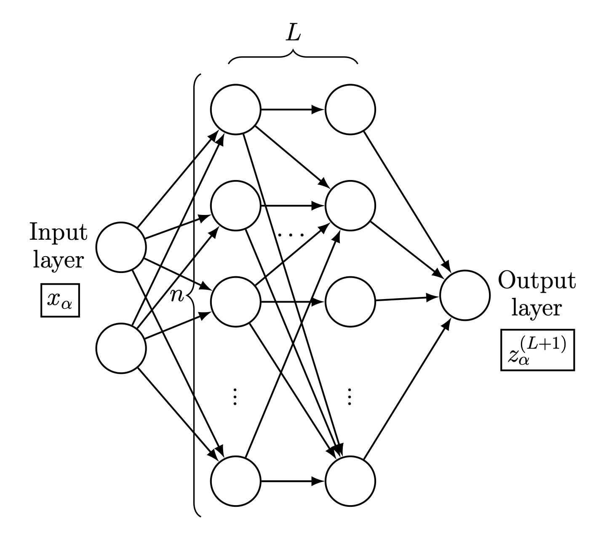
Fig. 28.1 Schematic of a feed-forward neural network with two inputs \(x_{\alpha}\) and one output \(z_{\alpha}^{(L+1)}\), where \(\alpha\) is an index running over the dataset \(\mathcal{D}\). The width is \(n\) and the depth is \(L+1\), with \(L\) being the number of hidden layers. The neurons are totally connected (some lines are omitted here for clarity). For the examples shown in this chapter, the inputs are the number of protons \(Z\) and neutrons \(N\) and the output is the mass (or, equivalently, the binding energy) of the corresponding nuclide (see Fig. 28.2).#
{kind=link}
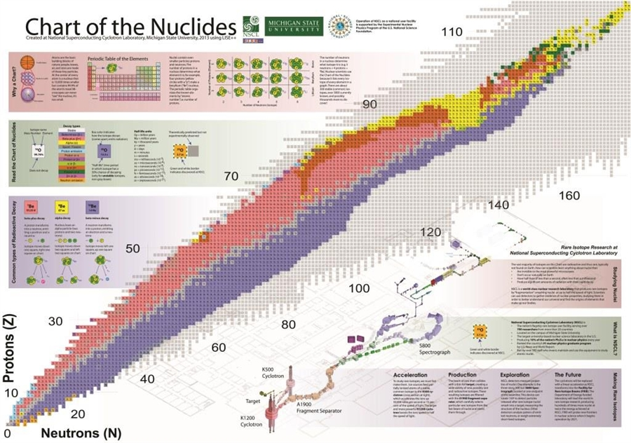
Fig. 28.2 Chart of the nuclides.#
{kind=link}
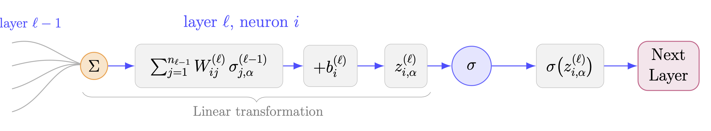
Fig. 28.3 Schematic of a neuron within a neural network. In the layer \(\ell\), the product between the weight matrix \(W^{(\ell)}\) and the previous layers’ output \(\sigma^{(\ell-1)}\) is summed over the width of the prior layer \(n_{\ell-1}\), and a bias vector \(b^{(\ell)}\) is added, forming the preactivation \(z^{(\ell)}\). The activation function \(\sigma\) acts on the preactivation to yield the output \(\sigma \bigl(z^{(\ell)}\bigr)\) (also notated \(\sigma^{(\ell)}\)) to be passed to the next layer.#
For a given initialization of the network parameters \(\pars\), the preactivations and the output function \(f\) are uniquely determined. However, a repeated random initialization of \(\pars\) induces a probability distribution on preactivations and \(f\). Explicit expressions for these probability distributions in the limit of large width \(n\) can be derived, with the ratio of depth to width revealed as an expansion parameter for the distribution’s action. The output distribution in a given layer \(\ell\) refers to the distribution of preactivations \(z^{(\ell)}_{j,\alpha}\). This choice allows for parallel treatment of all other layers with the function distribution in the output layer.
To achieve the desired functional relationship between \(x_{i,\alpha}\) and \(y_{j,\alpha}\), a neural network is trained by adjusting the weights and biases in each layer according to the gradients of the loss function \(\mathcal{L}\bigl(f(x,\pars),y\bigr)\). The loss function quantifies the difference between the network output \(f(x,\pars)\) and the output data \(y\), and the goal of training is to minimize \(\mathcal{L}\bigl(f(x,\pars),y\bigr)\). The gradients of \(\mathcal{L}\bigl(f(x,\pars),y\bigr)\) with respect to the network parameters \(\pars\) depend on the size of the output, as well as the architecture hyperparameters. It is known empirically that poor choices of architecture and/or initialization lead to exploding/vanishing gradients in the absence of adaptive learning algorithms, and this was problematic for training networks for many years.
The ANN output function \(f(x,\pars)\) for any fixed \(\pars\) (that is, specified weights and biases) is a deterministic function. But, as already stressed, with repeated initializations of the ANN with \(\pars\) drawn from random distributions, the network acquires a probability distribution over functions \(p\left(f(x)|\mathcal{D}\right)\). Again, \(\mathcal{D}\) is used to represent the data set of inputs and outputs that the network is finding a relationship between. In the pre-training case, this quantity simply refers to the inputs \(x_\alpha\) for the network.
{kind=link}
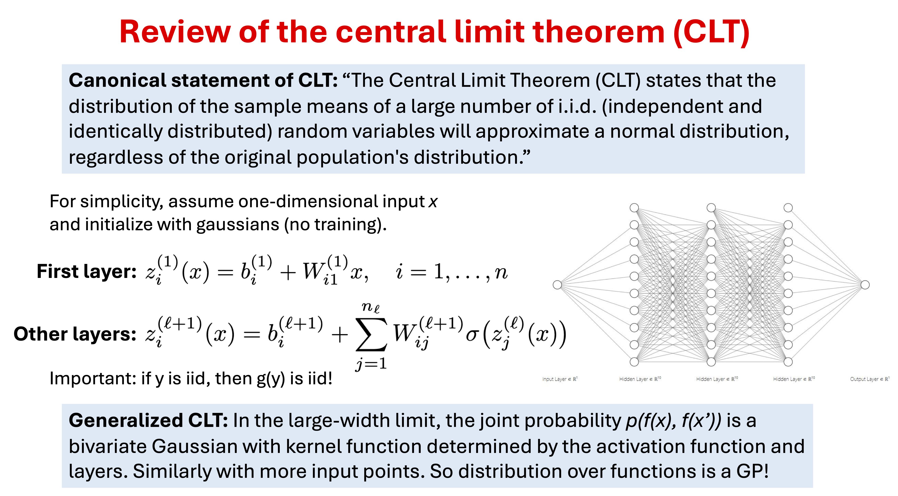
{kind=link}
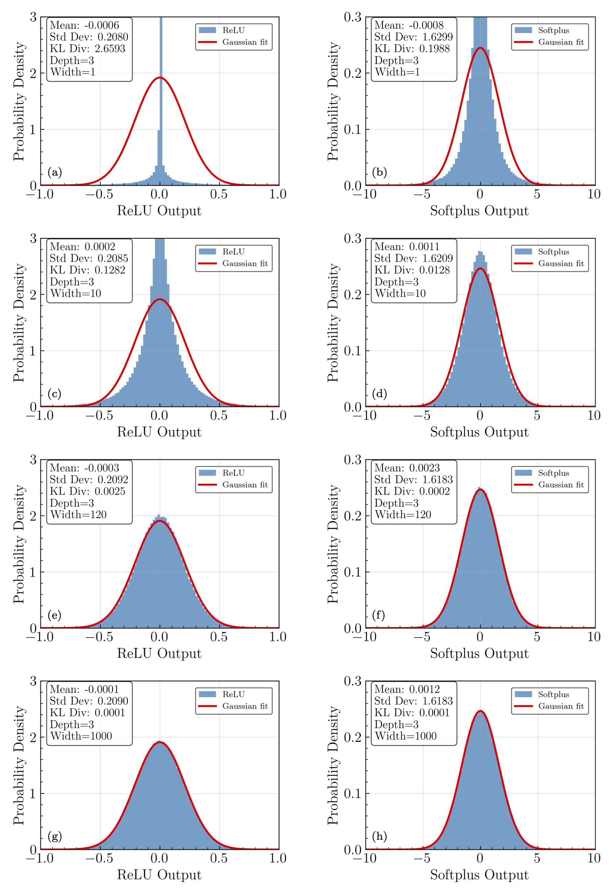
Fig. 28.4 Final layer ANN output distributions from repeated sampling at the same input point, each plot being a different width. There are two hidden layers. ReLU activation is on the left; Softplus activaiton is on the right. The widths vary from 1 up to 1000 neurons per layer.#
{kind=link}
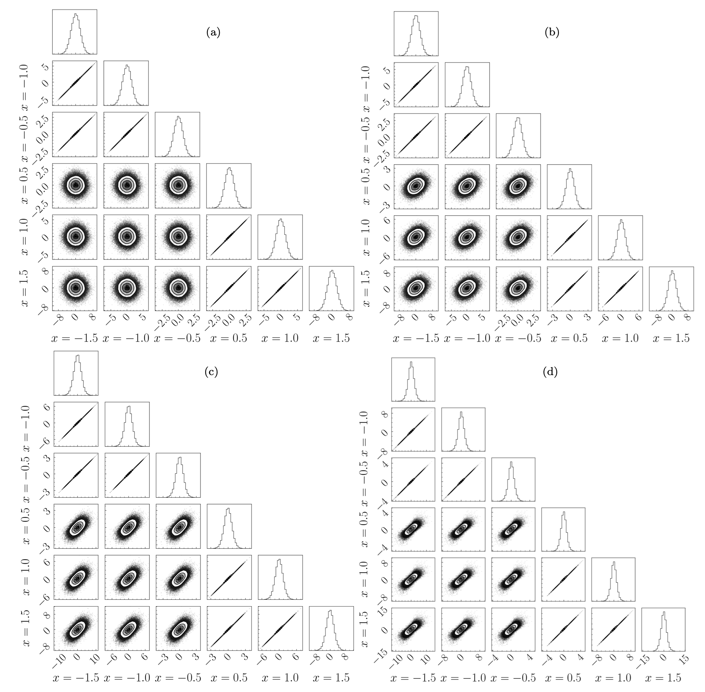
Fig. 28.5 Corner plots for ReLU activation function outputs. The corner plots all feature ReLU networks of a fixed width of 120 neurons, and depths of (a) 1, (b) 2, © 4, and (d) 8. The addition of hidden layers introduces correlations to the network output distributions.#
{kind=link}
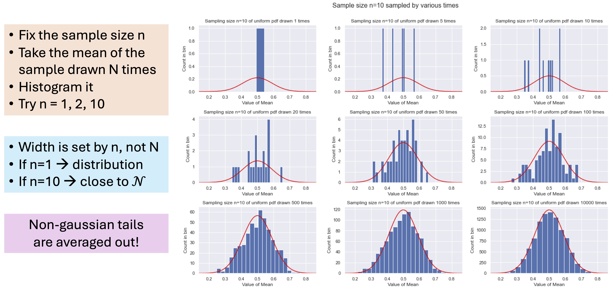
Fig. 28.6 Intuition for the central limit theorem (CLT).#
Summary: What is the prior distribution \(p(f(x;θ)|I)\)?#
The network’s weights and biases \(\thetavec\) are initialized as independent and identically distributed random variables (zero mean, we can take as Gaussian).
Neural network of given architecture induces a probability distribution of preactivations \(z\) at a given layer \(\ell\).
The preactivation of final (output) layer is \(f(x)\).
The Central Limit Theorem kicks in as the width \(n\) goes to infinity, so these distributions should become (correlated) Gaussians, i.e., Gaussian processes.
Claim: if we back off from this limit, neural networks can be studied using perturbation theory, with an expansion parameter: depth/width.
{kind=link}
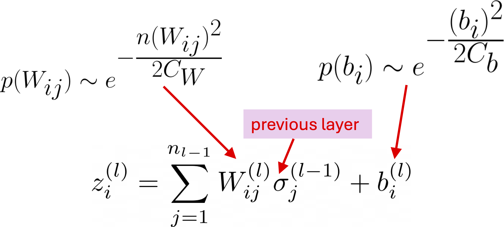
Fig. 28.7 Initialization distributions#
28.3. ANNFT: key ideas#
{kind=link}
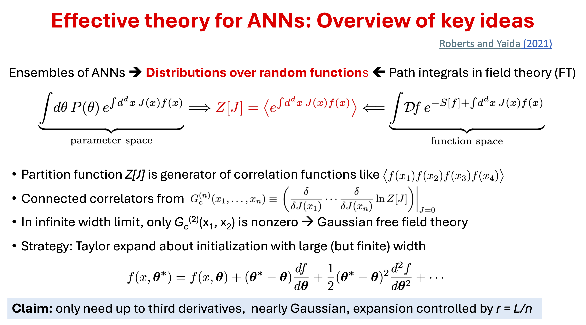
{kind=link}
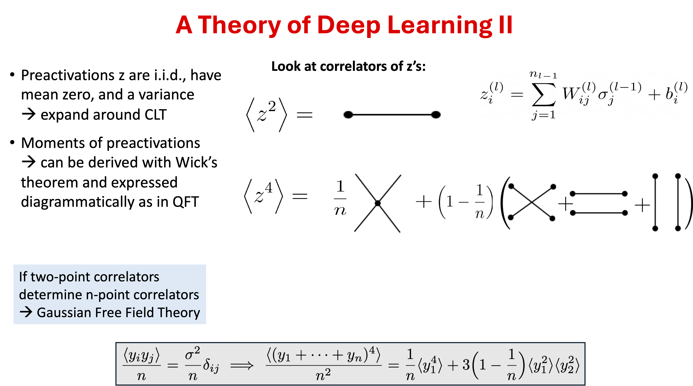
{kind=link}
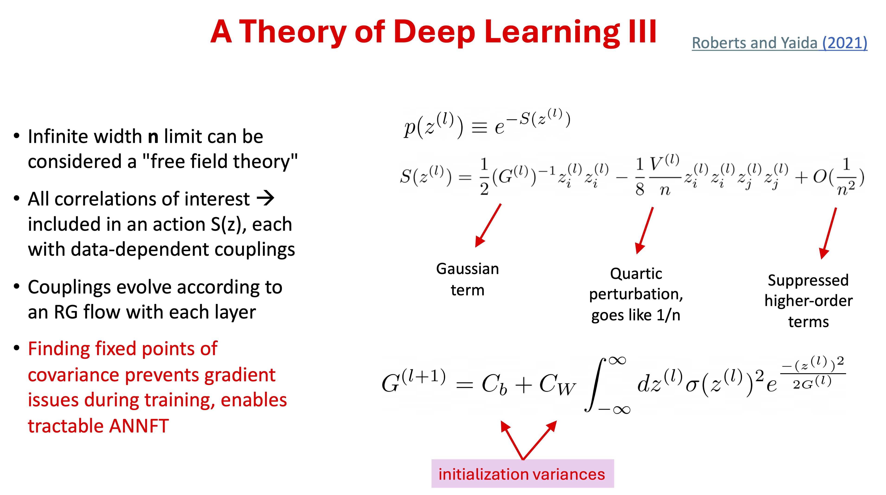
28.4. Criticality analysis#
Variance#
{kind=link}
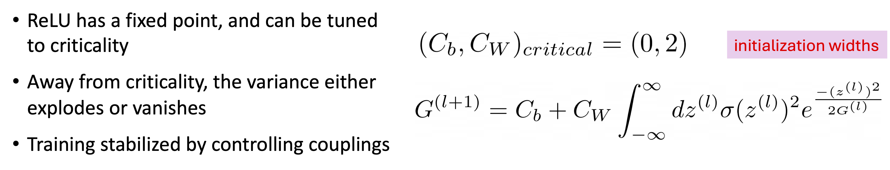
{kind=link}
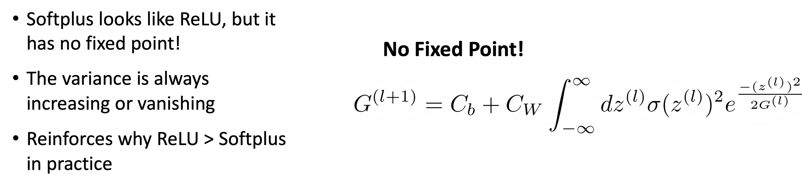
{kind=link}
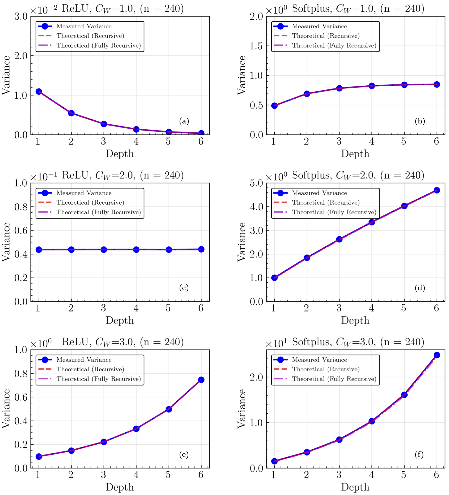
Fig. 28.8 The final layer pre-training output variance as a function of neural network depth with a fixed width of 240. Results are given for a ReLU activation function tuned (a) below (\(C_W = 1.0\), \(C_b = 0.0\)), (c) at the critical point (\(C_W = 2.0\), \(C_b = 0.0\)), and (e) above (\(C_W = 3.0\), \(C_b = 0.0\)) and for a Softplus activation function with (b) lowest, (d) intermediate, and (f) highest initialization widths for the weights by using the same initialization hyperparameters as the ReLU. The measured variance is plotted in blue, a recursive calculation using empirical values of the variance is plotted as a dashed red line, and a recursive calculation using only theoretically calculated variances is plotted as a dashed pink line. When above/below the critical values of the initialization width, the variance explodes/vanishes with depth. When the ReLU network is tuned to critical initialization, the variance is fixed with depth. The Softplus activations do not have a critical point for initialization. As such, the Softplus variance either grows or asymptotes towards a constant value with depth, and does not have initialization hyperparameters that give a fixed variance with depth.#
Excess kurtosis#
{kind=link}
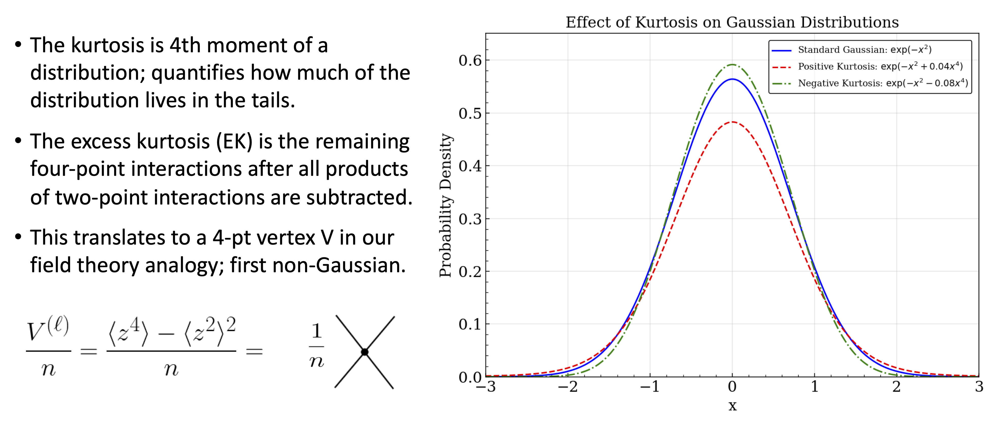
{kind=link}
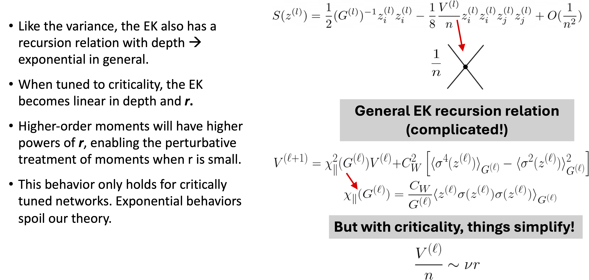
{kind=link}
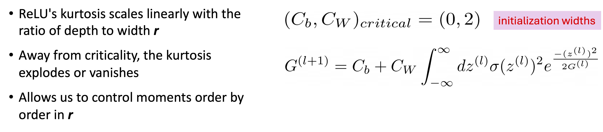
{kind=link}
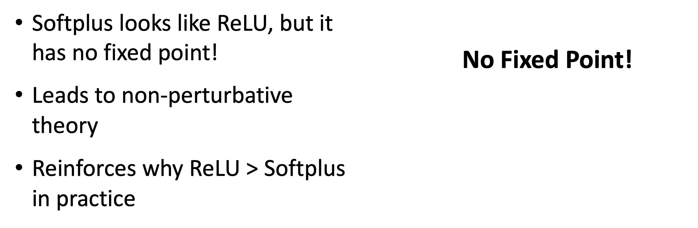
{kind=link}
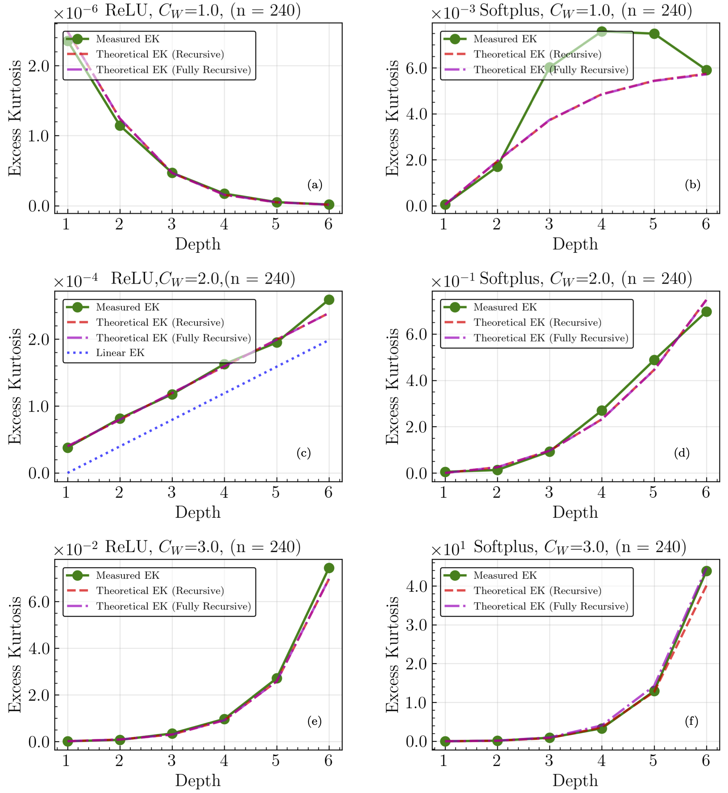
Fig. 28.9 The final-layer pre-training-output (unstandardized) excess kurtosis (abbreviated here as EK, and also known as the non-Gaussian 4-point correlations) as a function of neural network depth with a fixed width of 240. Results are given for a ReLU activation function tuned (a) below (\(C_W=1.0\), \(C_b=0.0\)), (c) at the critical point (\(C_W=2.0\), \(C_b=0.0\)) and (e) above (\(C_W=3.0\), \(C_b=0.0\)), and for a Softplus activation function with (b) lowest, (d) intermediate, and (f) highest initialization widths for the weights by using the same initialization hyperparameters as ReLU. The measured EK is plotted as a green line, a recursive calculation of EK using empirical values of the variance and initial EK is plotted as a dashed red line, and a recursive calculation using only theoretical values is plotted as a dashed pink line. An additional blue line is present in (e), representing an exact calculation of the critical EK without treating \(1/n\) terms as subleading. When critically tuned, ReLU networks’ EK behaves linearly with depth as predicted by ANNFT, demonstrating that the higher-order moments of the distribution are controlled by an expansion in \(r\). Non-critical distributions are seen to grow non-linearly with depth, reflecting that criticality allows for a perturbative ANNFT that lets deeper network network behavior to be analyzed.#
28.5. The story so far#
{kind=link}
28.6. Validating ANNFT training behaviors#
Anatomy of a feed-forward network#
{kind=link}
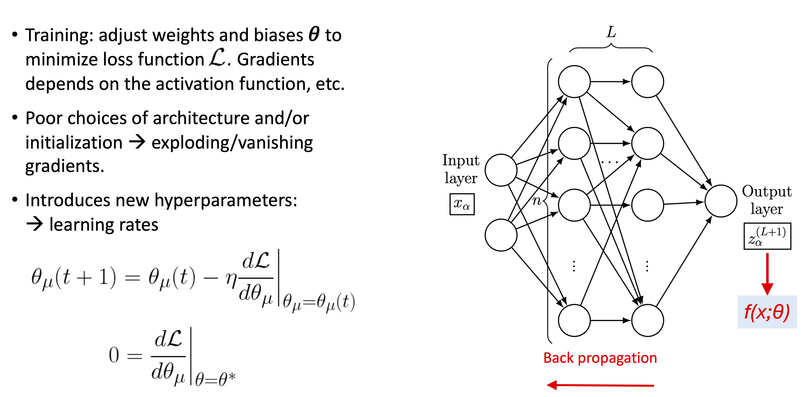
Training and the Theory of Deep Learning#
{kind=link}
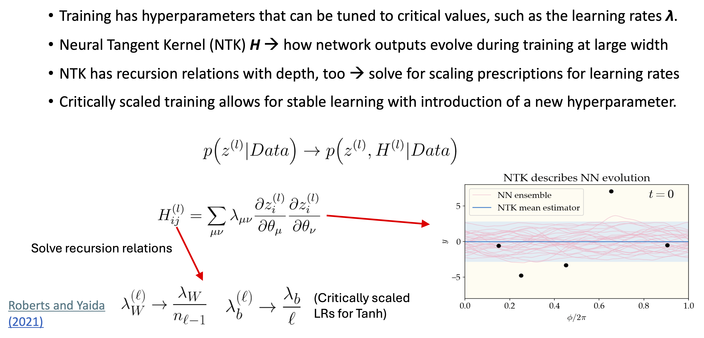
Neural Tangent Kernel Recursion#
{kind=link}
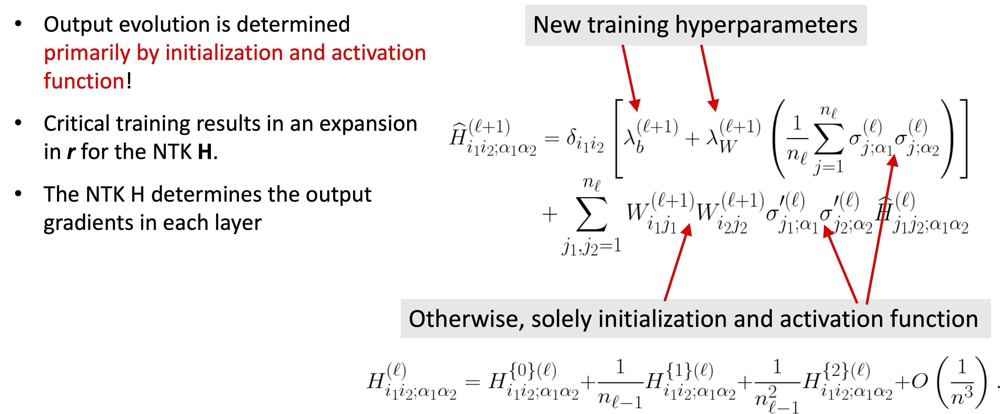
Mean RMS deviation between initial and final weights/biases#
ANNFT assumes that the initial network weights and biases are close so that a Taylor series for the trained solution is valid.
The average Frobenius norm of weights and biases was used to judge this.
{kind=link}
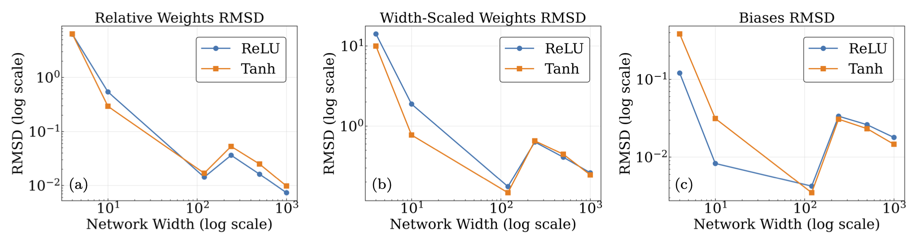
Fig. 28.10 Plots of the mean RMSD between final and initial parameters for the average network hidden layer plotted versus multiple widths (4, 10, 120, 240, 500, 1000). (a) depicts the relative RMSD for the weights (compared to the initial weights), while (b) depicts the absolute RMSD with the weight matrices rescaled by a factor of \(n\) to remove width dependence, and © has the unscaled RMSD for the biases (which are initially zero). Within the regimes useful for training, it can be seen that the changes in parameters are small, a condition required for Taylor expanding around a solution.#
{kind=link}
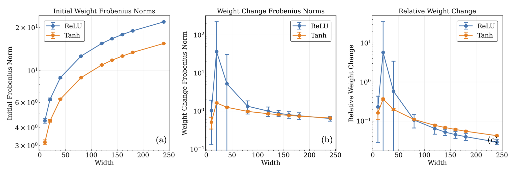
Fig. 28.11 (a) The mean hidden layer Frobenius norms of the pre-training weight matrices, (b) the difference between pre and post training matrices, and (c) the relative difference matrices versus the width of the network containing the matrices. Each norm per width is computed by averaging the mean norm for 100 network trainings of 20000 epochs, with outliers outside of the interquartile range of the distribution of each norm being excluded. The depth of each network configuration was held fixed at 4 layers (\(L=3\),\(\ell_{out}=4\)). The norms give an estimate of the size of the initial parameters, and their absolute and relative difference after training, and their dependence on the width of the network.#
{kind=link}
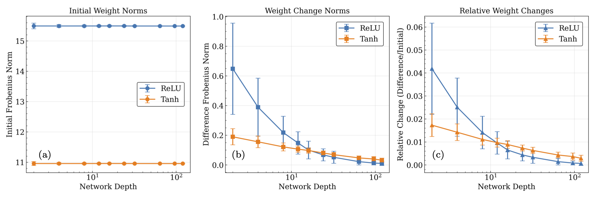
Fig. 28.12 Same as Fig. 28.11 but now with fixed width instead of depth. (a) The mean hidden layer Frobenius norms of the pre-training weight matrices, (b) the difference between pre and post training matrices, and (c) the relative difference matrices versus the depth of the network containing the matrices. Each norm per depth is computed by averaging the mean norm for 100 network trainings of 20000 epochs, with outliers outside of the interquartile range of the distribution of each norm being excluded. The width was held fixed at 120 neurons per hidden layer. The norms give an estimate of the size of the initial parameters, and their absolute and relative difference after training, and their dependence on the depth of the network.#
28.7. Expansion parameter#
At a large but finite width, the distribution over output functions acquires non-Gaussian components, but the near-CLT averaging enables these correlations to be treated in a controlled manner. At the same time, increasing depth \(\ell_{out}\) introduces increasing correlations. These opposing tendencies lead to the identification of the ratio \(r \equiv \ell_{out}/n\) being significant as both \(n\) and \(\ell_{out}\) become large. \(r\) acts as an expansion parameter that suppresses higher-order, non-Gaussian correlations in the limit of small \(r\).
{kind=link}
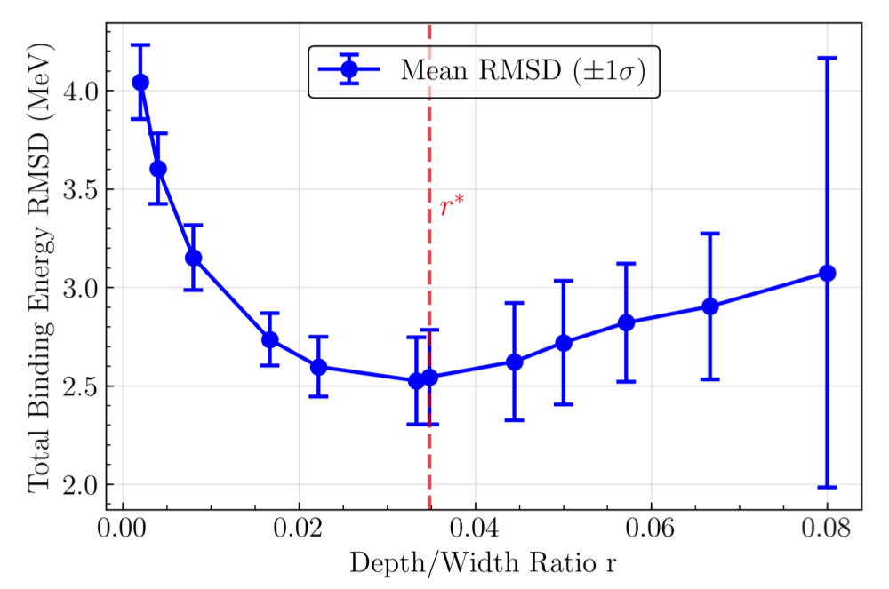
Fig. 28.13 The mean root-mean-square (rms) deviation of the binding energy data and the two-input-network outputs for \(100\) trainings vs. ratio of depth-to-width \(r\), with the depth \(\ell_{out} = 4\). Trainings with binding-energy RMSD\(\geq30\) MeV were omitted from calculation of the mean value of the binding-energy RMSD. The red horizontal line is the \(r^*\) value for this network, calculated to be \(r^*=0.034\). This labels the cutoff where the effectively deep regime begins to transition into the chaotic regime with increasing \(r\).#
As an expansion parameter, \(r\) quantifies the degree of correlation between neurons in a network. This results in three regimes describing the initialized output distribution:
\(r\rightarrow0\), all terms in the action dependent on \(r\) vanish, and the output distribution becomes Gaussian (effectively infinite width, CLT kicks in). These networks have turned off their correlations.
\(0<r \ll 1\), the moments are controllable, truncated, and nontrivial, as is desired in our effective theory approach. These networks are in what is known as the “effectively deep” regime.
\(r\geq1\), the moments are strongly coupled, and every term in the \(r\) expansion contributes to the action. In this regime, the theory becomes highly non-perturbative, and an effective description becomes impossible.
{kind=link}
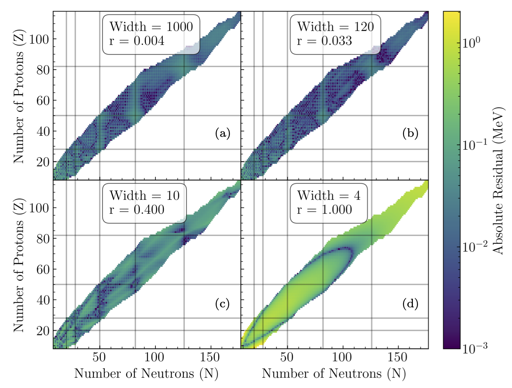
Fig. 28.14 Residual plots for a trained 2 input binding energy network with a fixed depth of 4, and widths of (a) 4, (b) 10, (c) 120, and (d) 1000 to demonstrate the different learning regimes in ANNFT.#
The four plots correspond to different regimes:
\(r=0.004\): Still able to learn, but will only learn more trivially as \(r\rightarrow 0\). Mean BE RMSD of 3.6 MeV.
\(r = 0.033\): The most learning-capable critical network. Mean BE RMSD of 2.52 MeV.
\(r = 0.4\): Loses feature learning to more strongly correlated neurons as \(r\rightarrow 1\). Mean BE RMSD of 56 MeV (bimodal between 72 and \(\sim\)3 MeV).
\(r = 1.0\): Neuron correlations prevent any learning beyond the simplest loss local minima. Mean BE RMSD of 72 MeV.
28.8. Critical tuning of hyperparameters#
{kind=link}
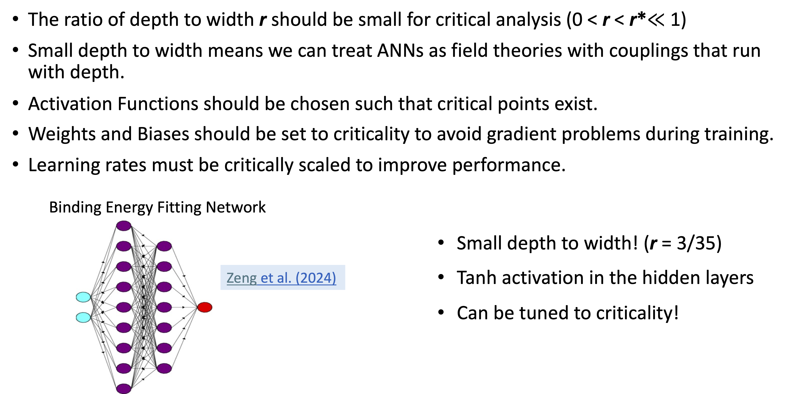
{kind=link}
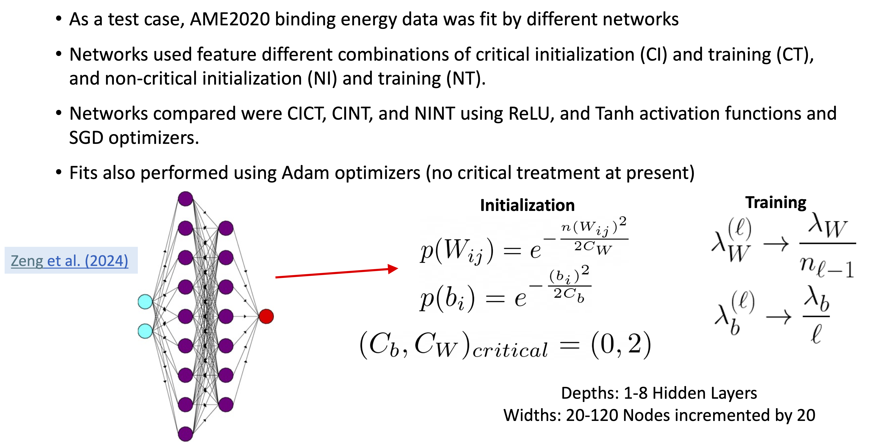
Mean absolute error loss vs. epochs#
{kind=link}
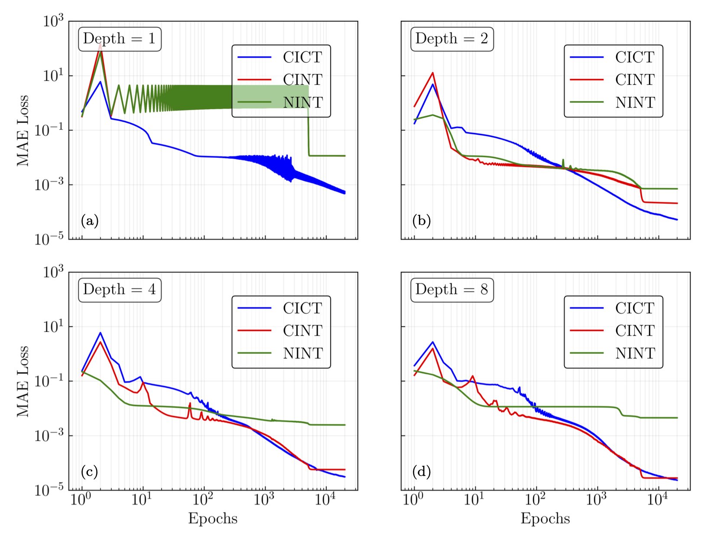
Fig. 28.15 The mean absolute error loss vs. epochs for ReLU activation functions. Hidden layer widths are at 100 neurons, and depths are 1,2,4, and 8 hidden layers. The CICT and CINT architectures outperform the NINT, and their performance improves with depth, whereas the NINT networks stagnate in performance after 2 hidden layers.#
{kind=link}
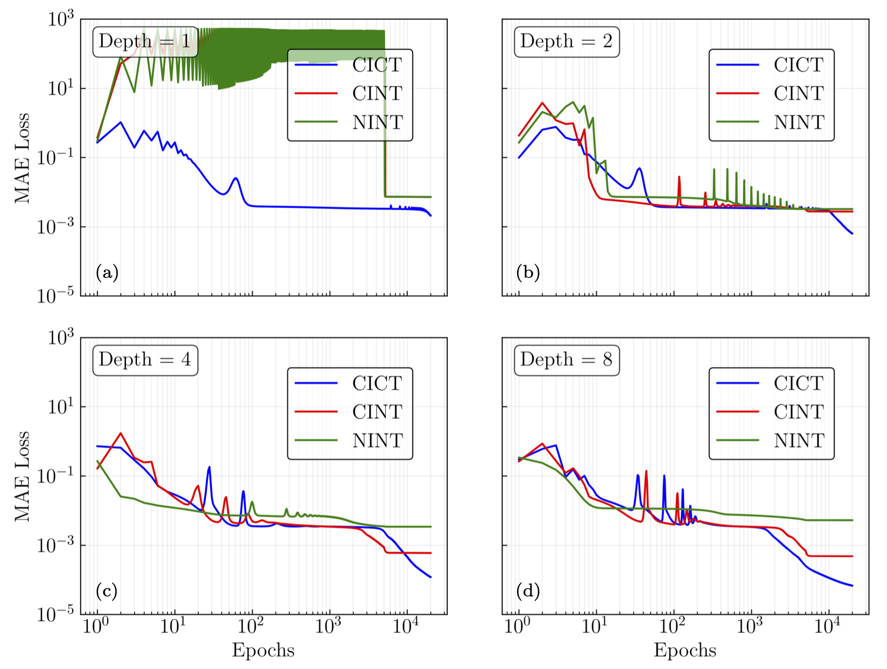
Fig. 28.16 Same as Fig. 28.15 but for Tanh activation functions.#
28.9. Summary of results#
Neural network criticality offers a means to understand neural network behavior, as well as providing prescriptions for architecture and training hyperparameters. Here we have explored the non-empirical approach to understanding ANNs using a field-theory-based criticality analysis (ANNFT). We used a protoypical nuclear physics ANN as a testbed, namely a two-input/one-output feed-forward network trained from the AME2020 dataset to fit nuclear binding energies.
In pre-training, we found the expected approach to Gaussian distributions for the final layer output distributions with fixed depth but increasing width. Within small fluctuations, normal distributions were seen by a width of 120 neurons for both ReLU and Softplus activations and for every other activation function we have tried. The correlations between pairs of input values with a width of 120 and increasing depths showed Gaussian process (GP) correlations with the predicted kernel at depth 1 and increasing correlations with additional hidden layers.
A comparison of measured variance and excess kurtosis (difference of the fourth moment from Gaussian expectations) from many initializations for a fixed width of 240 and increasing depths validates the theoretical predictions of criticality. In particular, for the ReLU activation function the variance grows or shrinks with depth if the initialization hyperparameters are tuned above or below the predicted critical value. At criticality the variance is flat. In contrast, the Softplus activation function does not have a critical fixed point for initialization. In accordance with theory, the variance either grows or asymptotes to a constant value with depth. Non-zero excess kurtosis (EK) indicates non-Gaussian four-point correlations. For both activation functions, the observed behavior of the EK with depth is in good accord with theoretical expectations.
Next we considered training of the ANN. We followed the mean absolute error (MAE) loss for a large number of epochs with several different depths, using combinations of critical and non-critical initialization and training. The networks with critical initialization and critical training (CICT) reached the lowest loss in all cases both for ReLU and Tanh activation functions, with particular contrast to when non-critical hyperparameters were used for both initialization and training.
Most practitioners do not encounter these issues even though they rarely pay attention to details of initialization and training. This is because the critically tuned networks are still outperformed by adaptive optimizers. Nevertheless, the results are comparable, and differ by a much smaller factor than when untuned.
Of particular interest is the prediction by ANNFT of different training regimes, characterized by the ratio of depth to width \(r\). The predictive analyses of ANNFT are based on the validity of a Taylor series expansion about the initialization. By considering the mean hidden-layer rms deviation and Frobenius norms of the weight matrices before and after training, we can see that the conditions of small deviations from initialization are achieved with sufficiently small \(r\). The different learning regimes are manifested by looking at the rms deviation of the binding energy data and ANN outputs as a function of \(r\), achieved by varying the width at fixed depth, and through heatmaps of global residuals across all \(N\) and \(Z\) for four different \(r\) values.
The results validated that ANNFT offers insight into
why networks that are wider than they are deep are preferred, as they will have correlations in their output distribution attenuated by the larger width;
the success of activation functions such as ReLU or Tanh compared to Softplus or sigmoid;
the success of certain initialization schemes (He initialization is reproduced by ReLU’s critical initialization).
We restricted the training protocol in this work to facilitate a clean analysis of criticality, but the door is open to explore heuristically successful approaches to network training in the context of ANNFT.
{kind=link}
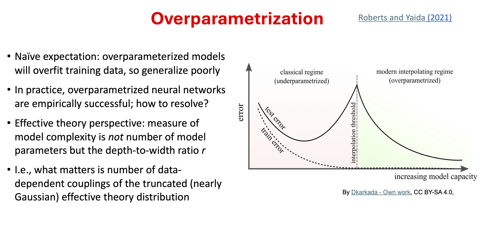
28.10. Appendix: field theory formalism#
{kind=link}
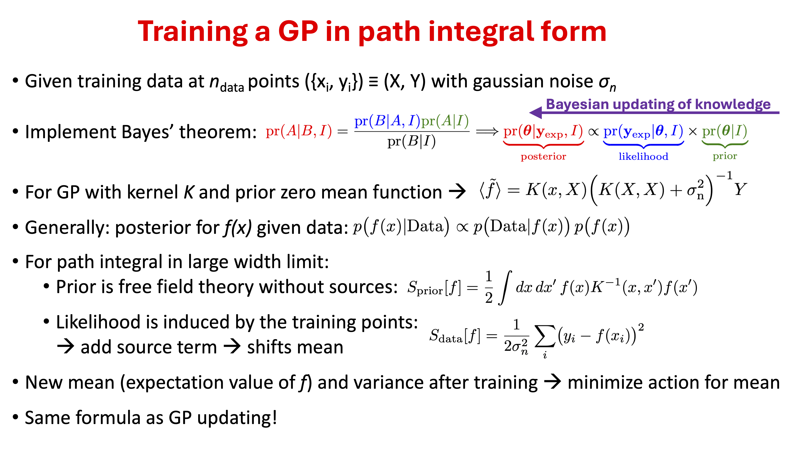